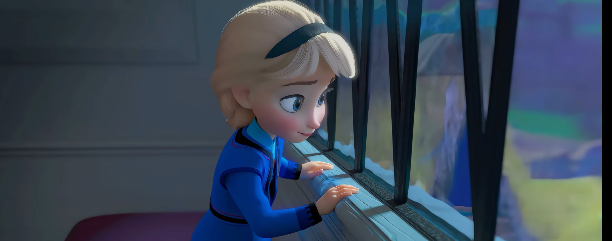
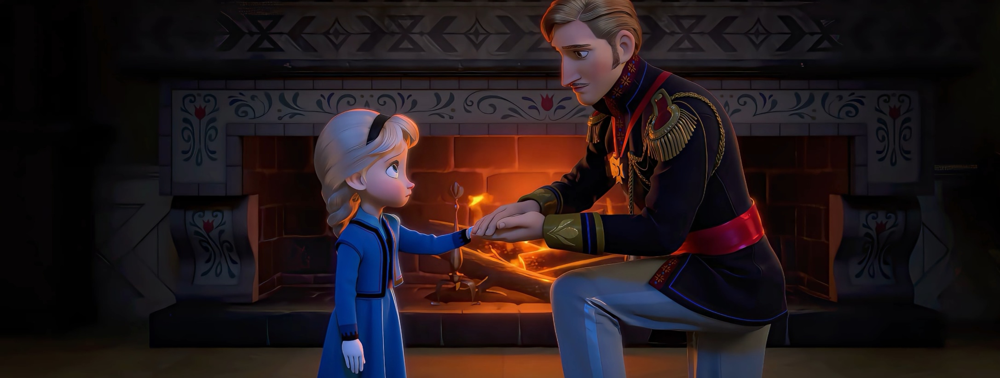

🚪 隔离时期的艾莎
📖 这一页讲什么
隔离不是一天发生的，而是十几年里一层层加固的壳。这一页聚焦艾莎在“封闭期”对安娜的真实心理——来自《Conceal, Don't Feel》的大量内心独白，是电影没给的珍贵视角。


🧤 手套与房门：物理的屏障


为了不失控，艾莎戴上手套、关上房门。这些动作表面是“收纳魔法”，实质是“收纳自己”。她越来越少出现在安娜面前，连对话都隔着门完成。
💭 内心独白：我的爱本身就是危险
小说反复写艾莎的信念：她不是讨厌妹妹，而是坚信“只要我靠近，就可能再伤到她”。于是她用疏远来表达保护——一种笨拙到残忍的温柔。她甚至羡慕安娜“什么都不记得”的自由。
🌧️ 父母去世后：更深的孤绝
父母出海遇难，艾莎的“锚”也断了。三年守丧期里，她把 conceal 执行到极致，连老臣彼得森都只能隔着门说话。她不是变得冷漠，而是再没有人能替她分担这个秘密。
👁️ 她如何看安娜
在艾莎眼里，安娜永远是那个“该被保护的小妹妹”。这份保护欲，恰恰是她不敢靠近的原因——越在乎，越怕失去；越怕失去，越要推开。
🚪 门的隐喻：物理距离与情感距离
“门”是姐妹隔离最核心的视觉母题。《Do You Want to Build a Snowman》用一个不断被关上的门，浓缩了童年的断裂：一次次，安娜敲门，艾莎退后。门后的沉默与门外的等待，正是姐妹分离的视觉母题：物理距离不远，情感却隔着重霜。那扇门不是冷漠，是艾莎用尽全力把“可能伤人的自己”挡在门外，也把最想靠近的人挡在门外。到 F1 结尾，艾莎说“Let's never close them again”（让我们永远不要再关上它们）——心门与城门一同敞开，从 conceal 到 reveal，完成的不是力量的胜利，而是“被允许存在”的胜利。
🎵 平行而错位：《For the First Time in Forever》
加冕日的《For the First Time in Forever》用一首对唱写出同一时刻的两重孤独：安娜渴望与人相连、艾莎恐惧被人看穿，两人在同一首歌里唱出完全不同的恐惧。这种“平行而错位”的声部，恰好说明羁绊的裂缝源于彼此都不敢先伸出手——而非不爱。
先厘清一件事：这首对唱里，两人并不在同一句歌词上分声部——她们各自有完整的独唱段落，真正“平行而错位”的是结尾合唱段里两组词句的交替对唱。
安娜的独唱是明亮的：“'Cause for the first time in forever, there'll be music, there'll be light. For the first time in forever, I'll be dancing through the night.”（第一次，将有音乐将有光；我将彻夜起舞）——再加上收尾的“For the first time in forever, nothing's in my way”（第一次，没有什么挡我的路）与“I won't be alone”（我不再孤单），她的关键词是期待与人相遇：想跳舞、想被看见、想遇到“那一个人”。
艾莎的独唱则是收紧的：“Don't let them in, don't let them see. Be the good girl you always have to be. Conceal, don't feel, put on a show. Make one wrong move and everyone will know.”（别让他们进来，别让他们看见；做那个你必须一直做好的女孩；隐藏，别感受，演一场戏；走错一步，所有人都会知道）——她的歌词里没有一句提到“for the first time in forever”，而是全部落在“别被发现”的恐惧上。
合唱段才是错位最锋利的地方：同一个旋律上，安娜唱“For the first time in forever, I'm getting what I'm dreaming of”（我要得到我梦想的东西），艾莎紧接着唱“Don't let them in, don't let them see”（别让他们进来，别让他们看见）；安娜的“A chance to change my lonely world”（一个改变我孤独世界的机会），对上艾莎的“Conceal, don't feel, don't let them know”（隐藏，别感受，别让他们知道）。一个在打开自己，一个在封死自己——这就是“平行而错位”的准确含义，而非两人共用同一句歌词。